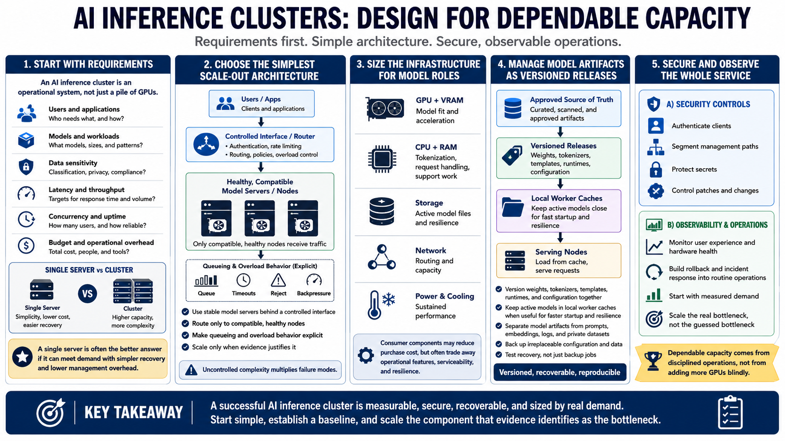

Course Summary and Key Takeaways
Connecting to LMS... Progress: in progress

Narration
An AI inference cluster is an operational system, not simply a collection of GPUs. Its design begins with users, models, data sensitivity, latency, throughput, concurrency, uptime, and budget. Those requirements determine whether a cluster is justified at all. A single server remains the better answer when it can meet demand with acceptable recovery and less management overhead.
When scale-out is justified, choose the simplest architecture that satisfies it. Use stable model servers behind a controlled interface, route requests only to compatible healthy nodes, and make queueing and overload behavior explicit. Match GPUs and VRAM to model roles, support them with sufficient CPU, RAM, storage, network capacity, power, and cooling, and understand where consumer components trade lower cost for fewer operational features.
Manage model weights, tokenizers, templates, runtimes, and configuration as versioned releases. Keep active models in local worker caches when that improves startup and resilience, while maintaining an approved source of truth. Separate those artifacts from prompts, embeddings, logs, and private datasets. Back up irreplaceable configuration and data, and test recovery.
Finally, secure and observe the whole service. Authenticate clients, segment management paths, protect secrets, control patches, and monitor both user experience and hardware health. Build rollback and incident response into routine operations. Start with measured demand, establish a repeatable baseline, and scale the component that evidence identifies as the bottleneck. That discipline produces a cluster that delivers dependable capacity instead of multiplying cost and failure modes.